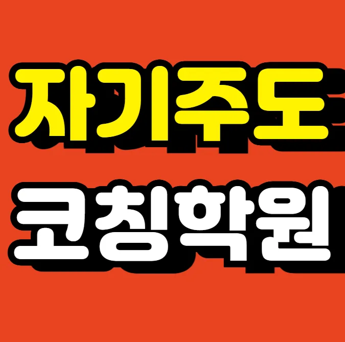

학부모님은 아이의 학습 스타일을 먼저 살펴보는 것이 중요해요. 자녀의 흥미와 약점을 파악한 뒤 맞춤형 프로그램을 제공하는 곳을 찾는 것이 좋은 선택이에요. 전문가들은 교사의 피드백 빈도와 수업 자료의 최신성을 강조해요. 주변 새롬동 검정고시학원가를 직접 둘러보면서 시설과 분위기를 직접 확인해요. 새롬동에 사는 많은 가정이 이런 과정을 통해 만족스러운 선택을 해요. 최종 결정은 체험 수업 후 아이가 편안함을 느끼는지 판단해요.
새롬동은 아파트 단지와 단독 주택이 혼합된 주거 형태가 많아 학생들이 다양한 학습 환경에 노출돼요. 초등 저학년은 놀이와 학습을 자연스럽게 연결하는 체험 위주 교육이 효과적이며, 방과 후 새롬동 검정고시학원가가 밀집해 있어 이동이 편리해요. 초등 고학년은 기초 개념을 확립하고 중학교 진학 대비 심화 문제 풀이가 중요하고, 지역 도서관 활용이 활발해요. 중학생은 대학 입시와 연계된 심화 과목 선택이 다양하며, 새롬동 검정고시학원에서는 모의고사와 피드백 중심 수업을 선호해요. 고등학생은 목표 대학별 맞춤형 전략 수립이 필요하고, 스터디 그룹 활동이 활발히 이루어져요. 전체 학년에서는 부모와 교사의 협력이 학습 동기 부여에 큰 역할을 한다는 점을 기억하면 좋겠어요.
와와학습코칭센터는 성취 기록 다이어리를 활용해 매 수업마다 목표와 결과를 시각화해요. 주요 대상은 영어 기초가 약하지만 성장 가능성이 큰 초등학생이며, 커리큘럼은 단계별 진단 후 맞춤 학습 플랜을 제공해요. 수강료는 초등영어C 250,000원과 초등영어D 260,000원으로 책정돼 있어 가성비가 뛰어나요. 문제집을 반복하기보다 약점 보완에 집중하고, 운에 맡기는 성적 변동에 불안한 학생에게 데이터 기반 전략으로 확실한 향상을 약속해요. 새롬동 검정고시학원 건물과 학교 사이 거리가 짧아 등하교가 편리하고, 학부모 상담 시 상세한 피드백을 제공해 신뢰를 얻어요.
| 학원명 | 와와학습코칭학원 |
| 수강료 | 초등영어C 250,000원 | 초등영어D 260,000원 |
CURRICULUM
첫 단계에서는 교과서 지문을 기반으로 핵심 어휘를 추출하고 짝 맞추기 퀴즈로 이해도를 점검해요. 두 번째 단계에서는 변형된 문장을 만들어 사고 확장을 유도해요. 세 번째 단계에서는 키워드 기억 매칭 훈련을 통해 장기 기억을 강화해요. 네 번째 단계에서는 실제 시험과 유사한 문제를 풀며 시간 관리 능력을 길러요. 마지막으로 피드백 시간을 활용해 오답을 분석하고 다음 학습 방향을 설정해요. 전체 흐름은 단계별 목표 달성을 위해 설계돼 있어요.
새롬동 인근 학생들은 수학 문제를 풀 때 틀린 문제를 그냥 넘어가는 경우가 많아요. 누적된 오답을 복습하는 루틴이 확립되지 않으면 똑같은 실수를 반복하게 되거든요. 자기주도적으로 문제를 해결하는 과정을 경험하지 못해서 선생님의 도움 없이는 스스로 점검하기 힘들어해요. 그래서 틀린 문제를 왜 틀렸는지 분석하고 다시 푸는 연습이 꼭 필요해요. 이런 과정을 통해 실수를 줄이고 문제 해결 능력을 기를 수 있답니다. 부모님께서도 아이가 틀린 문제를 모아두는지 관심 있게 봐주시면 좋아요. 단순히 정답을 맞히는 것보다 오답을 분석하는 게 실력을 늘리는 지름길이라는 걸 아이들에게 알려줘야 해요.
수업은 학생이 스스로 질문을 만들도록 유도하고, 설명보다 공감 위주의 접근을 채택해요. 지식이 머무르지 않게 하려면 반복과 피드백을 결합한 구조를 적용하고, 주 2회 100분 수업으로 시험 대비에 집중해요. 핵심 순환 기반 루틴 점검표를 활용해 학습 흐름을 시각화하고, 매 회차마다 목표 달성 여부를 확인해요. 이런 전략은 지속적인 성장과 성취감을 동시에 제공해요.
추천하는 학생은 초등학교 5학년 정도로, 학습 태도는 충실하지만 조건 읽기가 약한 아이에게 특히 효과적이에요. 교과서 내용은 잘 이해하지만 문제에서 요구하는 조건을 놓치면 점수가 떨어지는 경우가 많죠. 이때 와와학습코칭센터의 맞춤형 피드백이 조건 파악 능력을 강화해 줘요. 또한 피드백 후 바로 적용할 수 있는 실전 연습을 제공하니, 학습 내용이 바로 실력으로 연결됩니다. 이런 점에서 조건 읽기와 논리 전개에 어려움을 겪는 학생들에게 강력히 권하고 싶어요
선생님께서 작은 변화까지 세심하게 캐치해 주셔서 학습 의욕이 크게 높아졌어요. 매주 진행되는 진도와 복습이 명확히 구분돼 있어 시험 전날에도 부담 없이 준비할 수 있었어요. 모의고사 결과를 체계적으로 분석해 주시고, 개인별 전략을 제시해 주셔서 실제 시험에서 좋은 성적을 거둘 수 있었어요. 공부 환경이 조용하고 깔끔해서 집중하기에 최적의 공간을 제공받았어요. 팀 프로젝트 진행 중 갈등이 발생했을 때 협력적인 분위기로 전환시켜 주셔서 팀워크가 자연스럽게 살아났어요. 이러한 경험을 통해 스스로 공부 계획을 세우는 능력이 크게 성장했어요.
